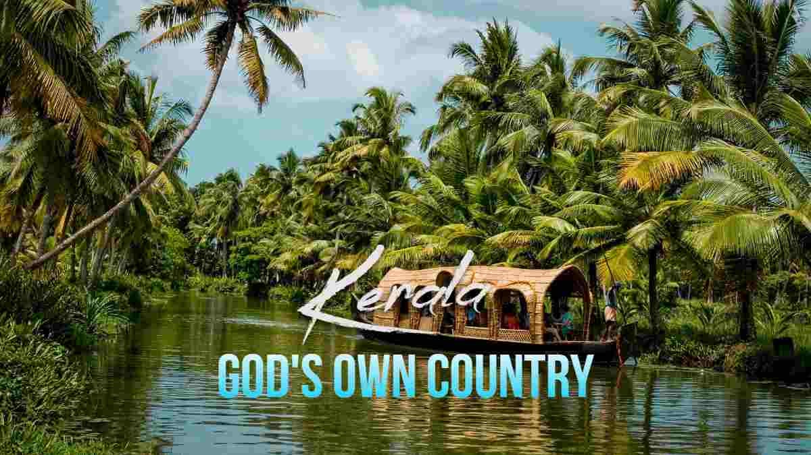
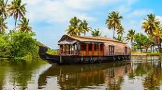

|  | Welcome to the Gods own country-kerala |
 |
For many travelers, Kerala is South India's most serenely beautiful state. This slender coastal strip is defined by its layered landscape: almost 373 miles (600km) of glorious Arabian Sea coast and beaches; a languid network of glistening backwaters; and the spice- and tea-covered hills of the Western Ghats, dotted with fiercely protected wildlife reserves and cool hill stations such as Munnar. Just setting foot on this swathe of soul-soothing, palm-shaded green will slow your subcontinental stride to a blissed-out amble. Kerala is a world away from the hectic action of the rest of India, its long, fascinating backstory illuminated by historically evocative cities like Kochi (Cochin) and Thiruvananthapuram (Trivandrum). Besides the famous backwaters, elegant houseboats, ayurvedic treatments and delicately spiced, taste-bud-tingling cuisine, Kerala is home to wild elephants, exotic birds and the odd tiger, while vibrant traditions such as Kathakali, theyyam (a trance-induced ritual), temple festivals and snake-boat races frequently bring even the smallest villages to life.
The best time to visit Kerala depends on preferences and desired experiences. Winter, from October to February, offers pleasant weather for outdoor activities and sightseeing. Monsoon, from June to September, showcases Kerala’s lush greenery but limits outdoor ventures. Summer, from March to May, brings warm temperatures but is ideal for wildlife sightings and adventure activities. Whether it’s enjoying festivals in winter, witnessing Kerala’s rain-washed beauty in monsoon, or exploring hill stations during summer, Kerala offers diverse experiences throughout the year. Each season unveils a unique facet of “God’s Own Country,” ensuring a memorable visit regardless of the time chosen.
 Dance
Dance